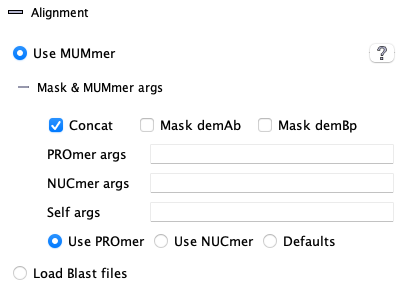

This document discusses running MUMmer within SyMAP and clustering the hits.
The corresponding MUMmer documentation is
v3 and
v4.
| Disk space and timing | Use MUMmer | Existing MUMmer files | Cluster MUMmer hits | MUMmer Help |
Disk space and timing
- The time and memory for MUMmer depends on the genomes sizes, complexity and similarity.
- If MUMmer fails, it is often due to insufficient memory; see Out of Memory, which explains how to determine the problem and ways around it.
- For large genomes, it is essential that the machine has at least 6Gb of RAM and disk space for each CPU used.
- If gene discovery is not important, then masking all but the gene sequences greatly reduces the time and memory. Alternatively, create a Blast file for input.
- When MUMmer is running, the temporary files can take up to 6G of disk space, hence, if you have 12 CPUs/threads running, this could use 72G of disk space.
MUMmer produces a .mum and .delta file.
SyMAP only uses the .mum file so it removes the .delta file.
If you do not want SyMAP to remove the .delta, start symap
with the "-mum" command line argument.
The following are sizes of MUMmer result data/seq_results/<species1>-to-<species2>/align directory:
| Species | Genome sizes | /align size |
|---|---|---|
| Arabidopsis thaliana x Brassica oleracea | 119Mb x 447Mb | 23M |
| Homo sapiens x Mus musculus | 3Gb x 2.7Gb | 573M |
| Homo sapiens x Pan troglodytes | 3Gb x 3Gb | 12G* |
You can remove the data/seq_results/<species1>-to-<species2> directory after SyMAP has finished the synteny computation, but it is strongly recommended that you leave them if you have the space. There are frequent SyMAP updates with improvements to the clustering and synteny computations; if you have kept these files, then you can update the synteny in very little time as SyMAP will reuse the MUMmer files (e.g. Hsa x Mus took >30 hours for MUMmer versus ~5 minutes for the synteny). Also, if you have saved the MUMmer files, you can easily try different parameters for the clustering and synteny stages.
The alignments can be compressed while not in use. The following was executed from the data/seq_results/Hsa_to_Pan directory, where the /align files took 12G of disk space:
tar -czf align.tar.gz align rm -rf align # this removes the directoryThe resulting align.tar.gz file take 3.5G of space (reduced from the 12G).
See Tested platforms and timing results
Use MUMmer
Preparing the sequences
|
Concat checked:
• For the 1st genome, sequences are concatenated into a file as long as the file length is <1G. Multiple
files of maximum file length 1G may be created.
• For the 2nd genome, the same as above except the maximum file length is 60M.
• All files from the 1st genome are searched against all files from the 2nd genome.
This results in fewer MUMmer alignments, which can be faster.
Concat unchecked: To reduce memory usage, you can uncheck Concat so that multiple files <60M are created for each genomes. This results in more MUMmer alignments, which can be slower. The exception is self-synteny, where all chromosomes are written to their own file, so Concat is not relevant. |  |
The following statistics are from comparing Arabidopsis thaliana (119M) against Brassica rapa (297M) on a MacOS using 1 CPU.
| Concatenated | Not concatenated | |
48819 hits 334 synteny blocks 46319 gene hits 38334 synteny hits Finished in 1 hour 8 minutes |
48846 hits 334 synteny blocks 46348 gene hits 38345 synteny hits Finished in 1 hour 35 minutes |
Mask <abbrev>
The <abbrev>, which is set in the Project parameters popup Abbreviation parameter, is used to determine which sequence will be masked.
Both sequences may be masked, which results in very fast execution and gene-based synteny.
If Mask is changed after A&S, the alignment files need to be removed with Clear Pair and A&S run again.
MUMmer parameters
The default MUMmer parameter seems to work fine with SyMAP, so probably do not need changing.| Parameter | Description | Default |
| PROmer Args1 | Arguments for PROmer | - |
| NUCmer Args1 | Arguments for NUCmer | - |
| Self Args2 | Arguments to use when aligning a chromosome to itself | - |
| PROmer Only3 | Use PROmer for all alignments | Off |
| NUCmer Only3 | Use NUCmer for all alignments | Off |
1 BEWARE: Entered PROmer and NUCmer arguments are NOT checked for correctness. See MUMmer parameters.
2When self-alignment is performed, standard arguments are used when comparing different chromosomes. However, additional arguments may be desired when a chromosome sequence is run against itself, e.g. --nosimplify.
3 By default, PROmer is used for alignments between different projects, while NUCmer is used for self alignments.
All MUMmer files but the those with the .mum suffix are removed by symap. If you prefer them not to be removed, use the "-mum" command line parameter, i.e.
./symap -mum
Existing MUMmer Files
| Selected Pair | No MUMmer files exist. MUMmer will be run to compare the two genome sequences.
Then Cluster&Synteny will be run. |
| Selected Redo | MUMmer files exist and have been processed.
All current results in the database will be removed. The Cluster&Synteny will be run using the existing MUMmer files. |
| Clear Pair | Remove the pair results from the database. If requested, it will also remove the MUMmer files. |
Cluster MUMmer Hits
| Algo1 vs Algo2 with hints | Parameter description | Pseudo and Piles | Go to top |
Algo1 vs Algo2

| Algorithm 1 (modified original, abbreviated Algo1): | |
| Pros | This is an generic algorithm that has knowledge of genes versus intergenic hits.
It is recommended for ordering sequence contigs and when there are little or no gene annotation. It must be used for self-synteny. It has been used on 100's of genome comparisons. |
| Cons | It does not distinguish between exon and intron hits. It is more likely to miss good homologous gene pairs. |
| Parameters | It only has one parameter, which is easier to run but there is no control over what hits are filtered. |
| Algorithm 2 (exon-intron, abbreviated Algo2): | |
| Pros | This is a new algorithm with explicit knowledge of gene pairs and their exon-intron structure.
When there is good gene annotations for both genomes, this is definitely the superior algorithm. It takes less memory. |
| Cons | It does not perform self-synteny.
It does not work when a given chromosome is split over multiple MUMmer files; this will NOT happen when SyMAP generates the MUMmer files. |
| Parameters | It has two set of parameters, hence, more control over results than Algo1. See Hints below the parameter explanation; the parameters generally do not need adjusting. |
Algo1 is the default for self-synteny and if there is no annotation; else Algo2 is the default.
Wrong strand The wrong strand is when all hits in a cluster are to the same strand (++/--) yet the cluster aligns to two genes on the different strands (+-/-+), or vice versa.
Algo1 includes these hits. You can view them in the Queries where the Hit St column will be different than the two gene Gst columns.
Algo2 does NOT include these hits. You can request to view the potential hits during the A&S by running it with the "-wsp" flag, i.e. ./symap -wsp . This will only show gene pairs with (1) multiple hits to exons (in one or multiple gene pairs), (2) at least one is not an overlapping gene. It is up to the user to determine what is real.
Hints about parameter settings
Hint for Algo1: Increasing the Top N parameter can cause too many hits and reduce synteny. Decreasing it can remove more gene-pair hits. Hence, try Algo2 if you want more gene pairs.
Hint for Algo2: On the output to the terminal (in Verbose mode), if any chromosome pair shows over 10,000 hits, the parameters probably need to be made more stringent. Too many hits confuses the synteny algorithm, which results in synteny blocks not being found; it also results in very long execution time.
Suggestion: For large genomes, experiment with the parameters on just one pair of the chromosomes. (You can use xToSymap for the split.)
I have experimented with the datasets: (1) human, chimpanzee, mouse (2) Arabidopsis, Brassica rapa, Brassica oleracea. Only B. rapa to B. oleracea needed parameter adjustment: the number of G1 hits was over 200k, which is way more than typical; by increasing all parameters a small amount, this reduced to just over 100k.
Parameter description
|
| Defaults:
|
| Parameter | Description | ||||||||||||
| Number Pseudo | If selected, the un-annotated ends of hits will be assigned a pseudo number. This is explained below in Pseudo genes. | ||||||||||||
| Algo1 (original) | |||||||||||||
| Top N piles | It will retain the top N hits of a pile of overlapping hits (Pile of Hits), as well as all hits with score at least 80% of the Nth hit. | ||||||||||||
| Algo2 (gene-centric) | |||||||||||||
| Scale |
| ||||||||||||
| Keep piles | EE, EI, En, II, In (E=exon, I=intron, n=non-gene)
| ||||||||||||
| Top N piles | Algo2 uses Algo1 Top N parameter for any uncheck categories, but in a more conservative way. It will retain the Top N hits of a piled region that have lengths within 80% of the longest hit. | ||||||||||||
| Collinear Sets | See Collinear sets | ||||||||||||
3.c.iii Pseudos and Piles
Pseudo genes|
The end of a hit may not overlap an annotated gene; by default, this
will just show a Gene# of 'N.~' where N is the chromosome number.
If Number Pseudo is selected, a pseudo Gene# will be assigned. The counts start after the annotated gene numbers and are suffixed by "~". For example, if the last Gene# for Chr03 is 5550 (e.g. 3.5550.), the first pseudo gene number will be 6000 (e.g. 3.6000.~). | 
|
If A&S was run without numbered pseudos, go to the Pair Parameter panel, and select Number Pseudo in the lower Drop-down; only this algorithm will be run. This cannot be undone; you would need to re-run A&S with the Number Pseudo unchecked to remove them.
| Pros |
If you would like the Queries
Cluster and
Report
to include un-annotated hits.
If you are exploring new candidate genes, numbered pseudos are easier to track. If your genome is not annotated, numbered pseudos are easier to track. |
| Cons | The Queries results can be easier to view with the 'N.~' as it is more distinct from a real Gene#. |
If comparing more than 2 species, it makes the most sense to have them all numbered or not numbered (though a mix will work).
Piles of Hits
| The below image shows a pile of hits on the left (Cabb C5)
that link to repetitive genes on the right (Arab Chr02). These are important to keep.
The right image shows a pile of hits in an intergenic region (Cabbage Chr03) to multiple other regions (B.rapa Chr01).
There are MANY occurrence of repeats like this in the MUMmer file, which is why these piles
must be filtered; if they are not, the synteny algorithm does not perform well.
| 
|


| Go to top |
Email: cas1@arizona.edu